Installing and Deploying MMC to WebSphere
This document describes how to install the production version of Mule Management Console to WebSphere. Note that you can also deploy Mule to a variety of other application servers or containers, such as Tomcat or JBoss. See Installing the Production Version of MMC for full details.
Please contact the MuleSoft Support team with any questions about downloading and deploying Mule Management Console.
Follow these instructions to install and configure your mmc.war file on WebSphere.
-
Log in to the WebSphere server.
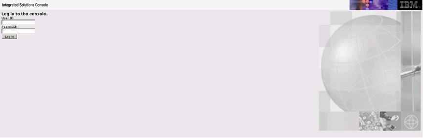 -
Go to Applications > WebSphere Enterprise Applications, then click Install.
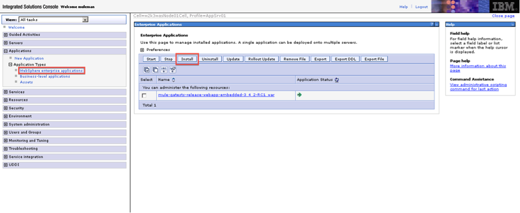 -
Select Local file system, click Browse, select the
mmc.warfile to deploy, then click Next.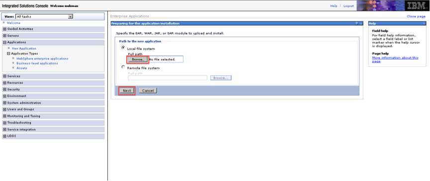 -
Select Detailed to show all the installation options, then click Next.
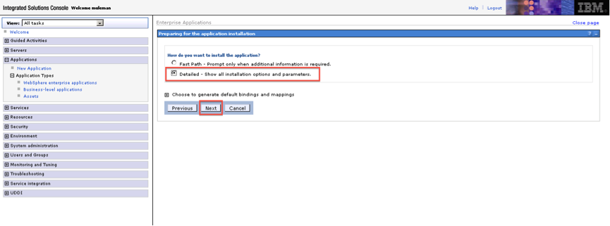 -
Review the Application Security Warnings, then click Continue.
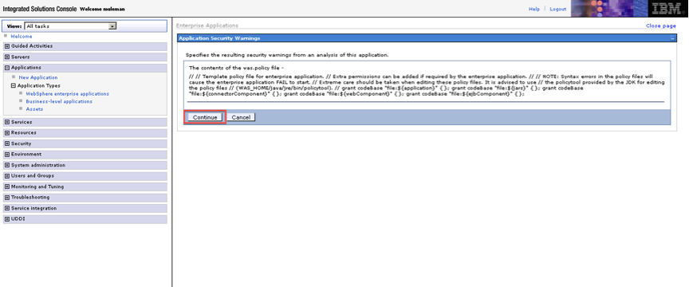 -
WebSphere presents a nine-step installation process. In Step 1, click Next.
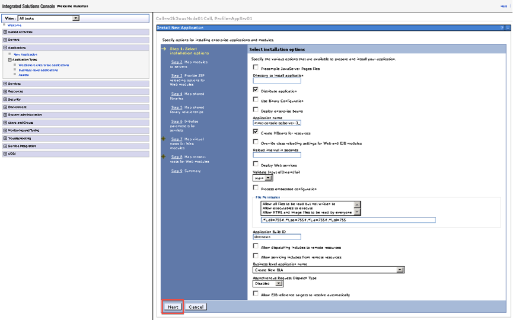 -
In Step 2, select the mmc module, then click Next.
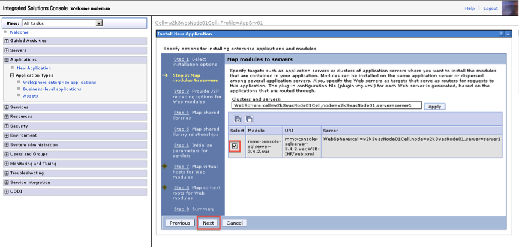 -
In step 3, click Next.
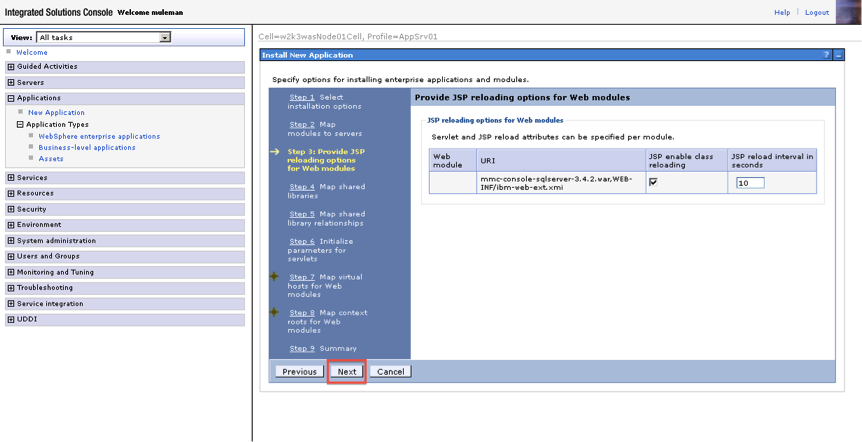 -
In Step 4, select both boxes as shown, then click Next.
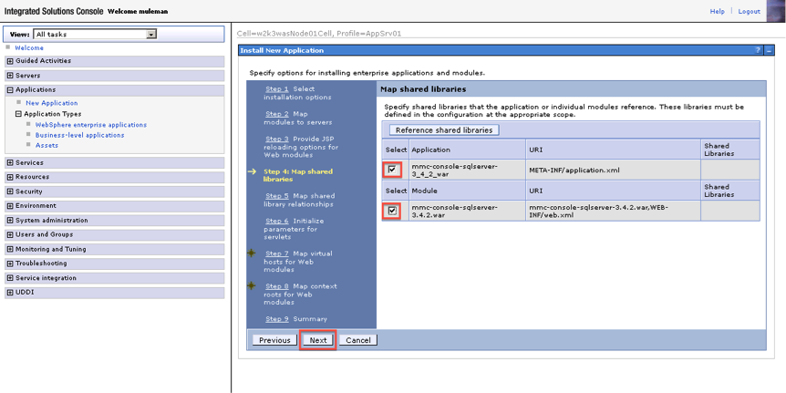 -
In Step 5, again select both boxes as shown, then click Next.
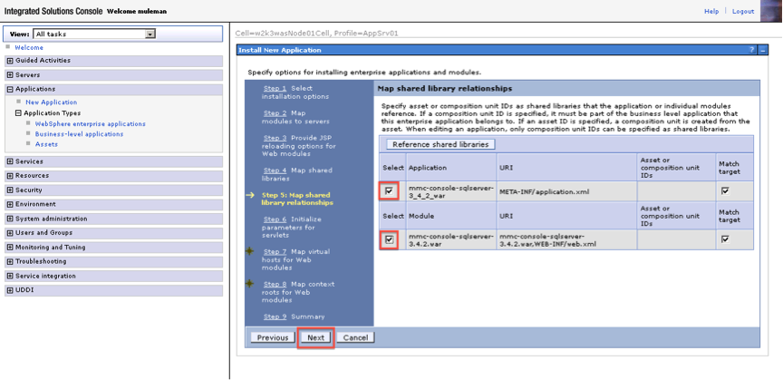 -
In Step 6, click Next.
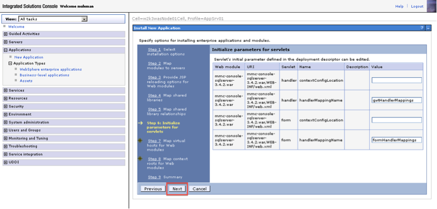 -
In Step 7, select the web module, then click Next.
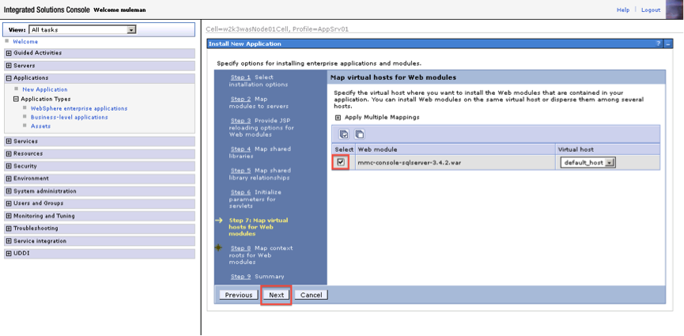 -
In Step 8, complete the context root (i.e :
/mmc), then click Next.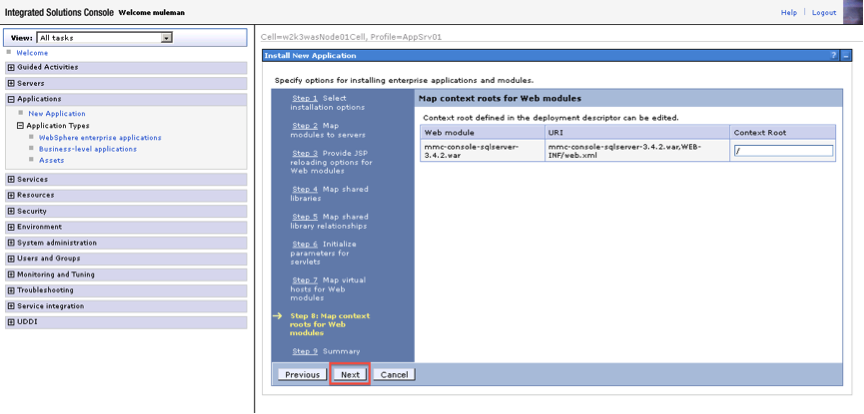 -
In Step 9, click Finish.
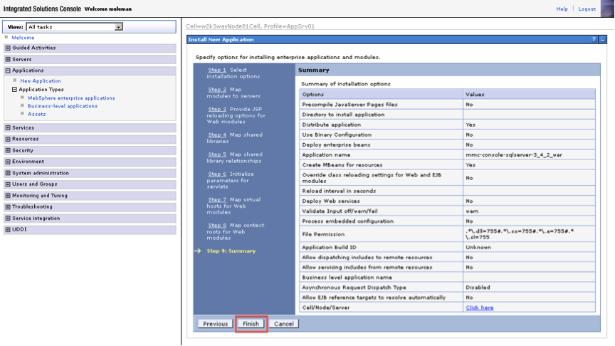 -
WebSphere displays an installation screen.
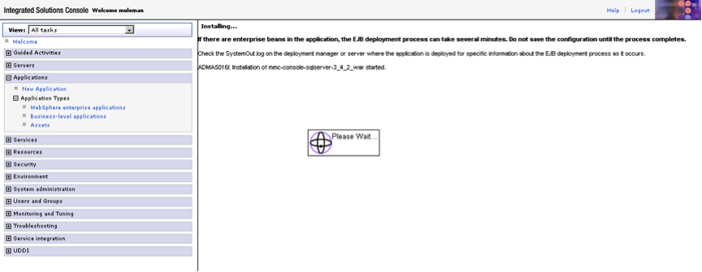 -
If the installation was successful you will see something like the following screen with a message that the application was installed successfully. Click Save in order to save it to the master configuration.
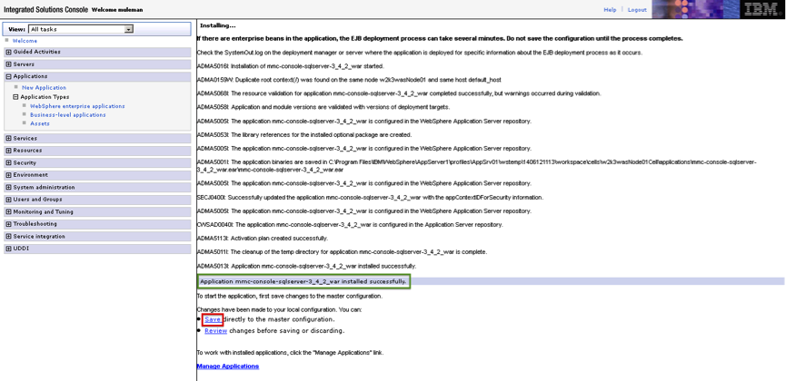 -
After you have saved, you can see the application installed in Enterprise Applications, but it is not running. Before starting the application, additional configuration is needed. Click on the application.
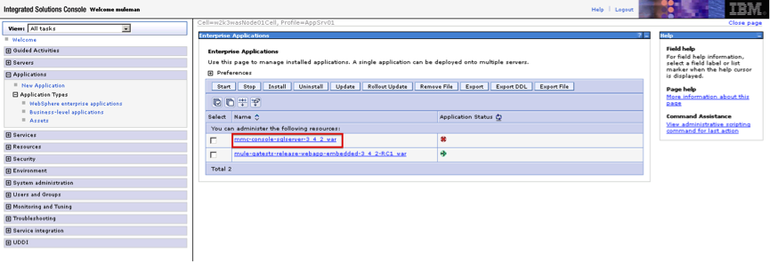 -
Click Class loading and update detection.
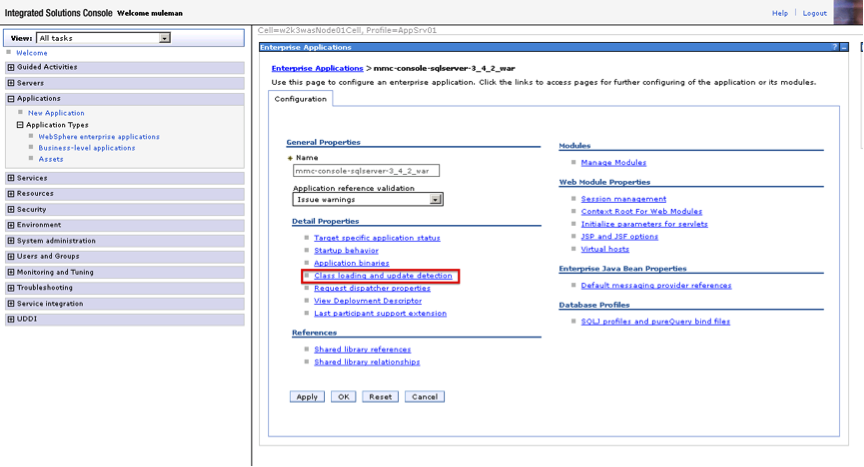 -
Under Class loader order select the option Classes loaded with local class loader first (parent last), then click Apply.
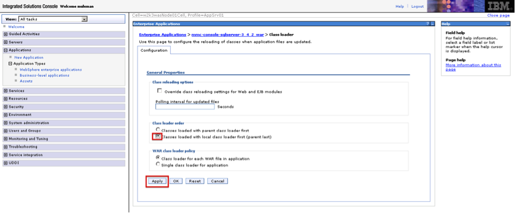 -
Click Save to apply the changes directly to the master configuration.
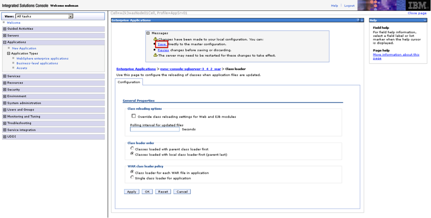 -
If you didn’t configure the context root during the installation process, select the application and under Web module properties click Context root for Web Modules. Assign the value you want, then click OK.
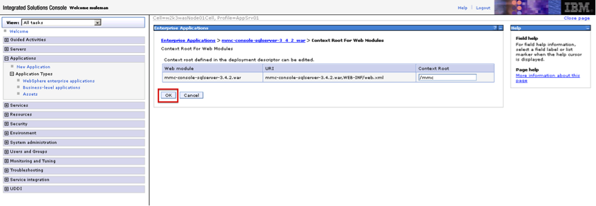 -
Your application status is now started.
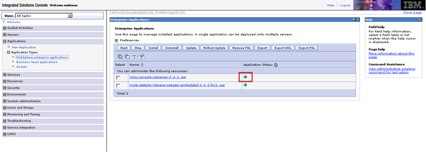
Note that if you want to configure MMC to persist data on external databases, you should follow the instructions for the specific database, as described in the following pages:
-
MMC version 3.4.X prior to 3.4.2: Persisting MMC Data On External Databases
-
MMC version 3.4.2 and above: Persisting MMC Data On External Databases
In the above pages, the paths of the directories where configuration files reside are based on an example Tomcat installation. When working with config files, you should change the directory paths to suit your Websphere installation. The table below lists examples of config file locations, using the MS SQL Server for illustration.
web.xml |
C:\Program Files\IBM\WebSphere\AppServer1\profiles\AppSrv01\installedApps\w2k3wasNode01Cell\mmc-console-sqlserver-3_4_2_war.ear\mmc-console-sqlserver-3.4.2.war\WEB-INF\web.xml |
||
tracking-persistence-mssql.properties |
C:\Program Files\IBM\WebSphere\AppServer1\profiles\AppSrv01\installedApps\w2k3wasNode01Cell\mmc-console-sqlserver-3_4_2_war.ear\mmc-console-sqlserver-3.4.2.war\WEB-INF\classes\META-INF\databases\tracking-persistence-mssql.properties |
||
mmc-mssql.properties |
C:\Program Files\IBM\WebSphere\AppServer1\profiles\AppSrv01\installedApps\w2k3wasNode01Cell\mmc-console-sqlserver-3_4_2_war.ear\mmc-console-sqlserver-3.4.2.war\WEB-INF\classes\META-INF\databases\mmc-mssql.properties |
||
Copy the sqlserver.jar into the following directory |
C:\Program Files\IBM\WebSphere\AppServer1\profiles\AppSrv01\installedApps\w2k3wasNode01Cell\mmc-console-sqlserver-3_4_2_war.ear\mmc-console-sqlserver-3.4.2.war\WEB-INF\lib
|
See Also
-
Get familiar with the MMC console.
-
Learn the basics of using MMC with the MMC Walkthrough.
-
Learn more about how to set up MMC to meet your needs.
-
Access the troubleshooting guide.